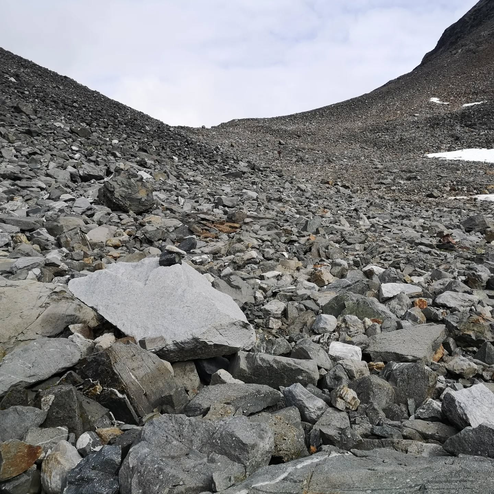
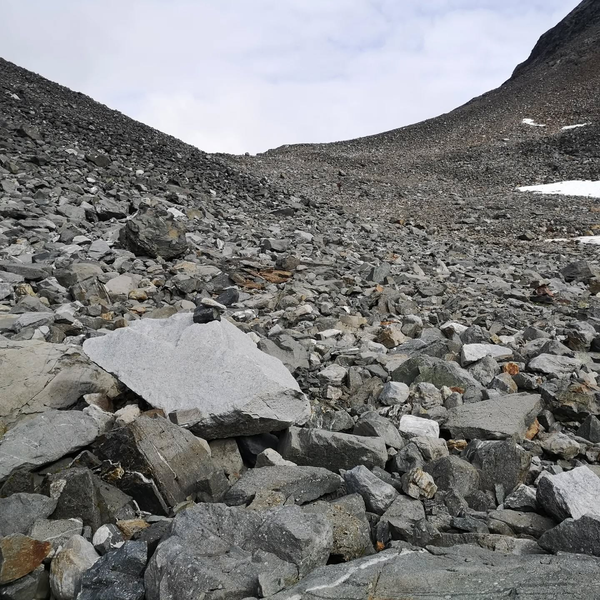
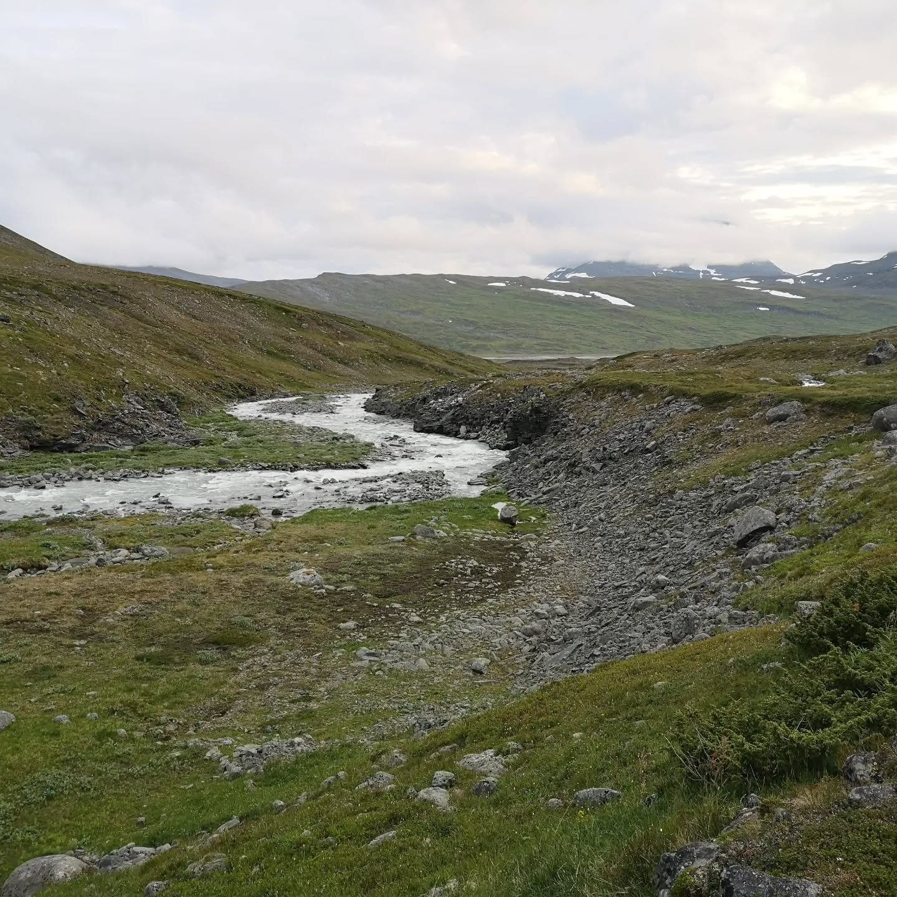
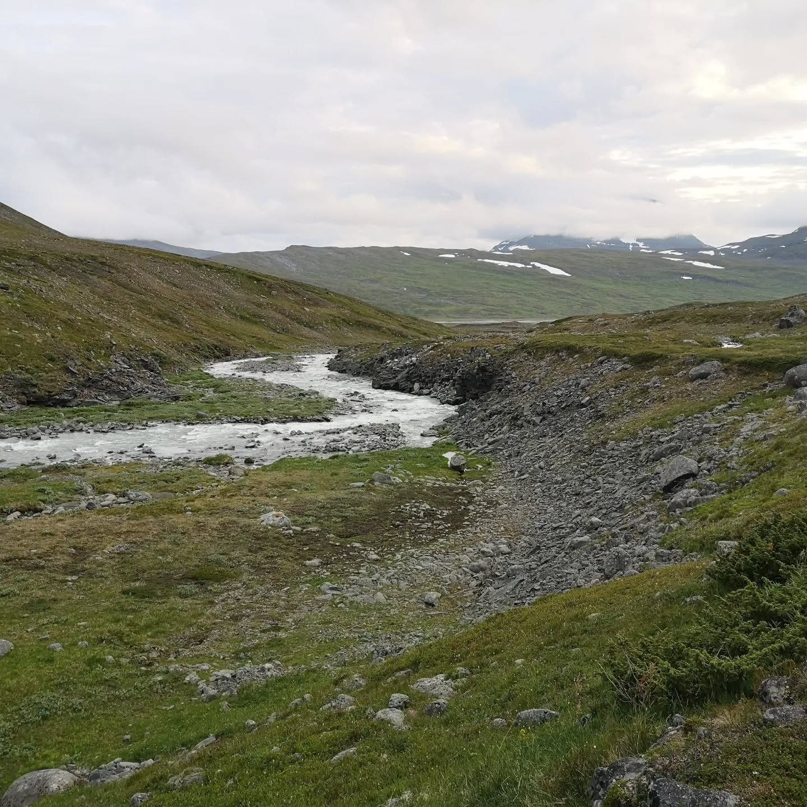

Day 3 of 6 in Swedish Lapland. Part 2. After the challenging pass we reached a breathtakingly wide...
Imported from Instagram.
Day 3 of 6 in Swedish Lapland. Part 2. After the challenging pass we reached a breathtakingly wide and beautiful valley made by ancient glaciers. The Goubirvaggi is one of the most impressive places I've ever seen. A vast landscape of rock so remote we met only one hiker and three reindeer for the 3 first days of our hike. The reindeer escorted us for quite a while, it was magical.


 



 
